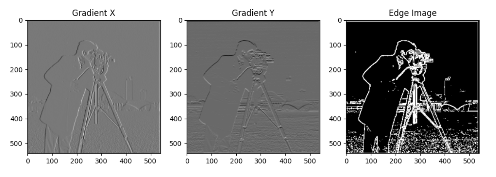
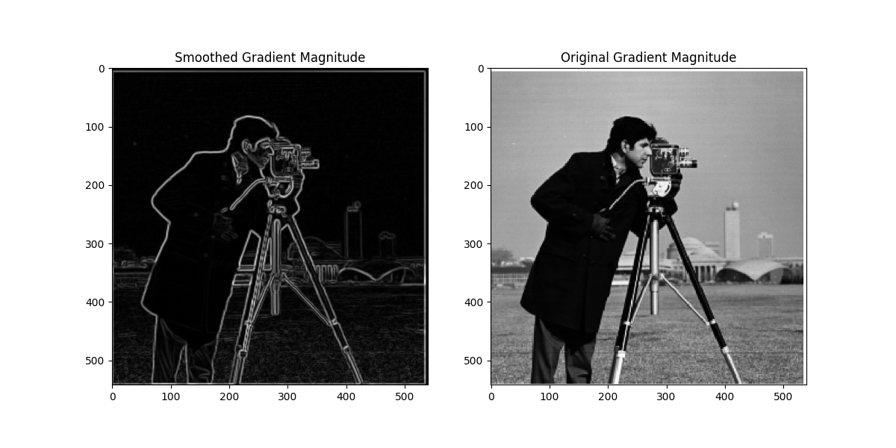
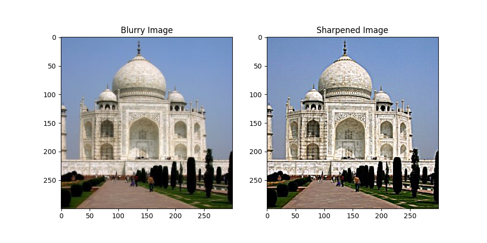
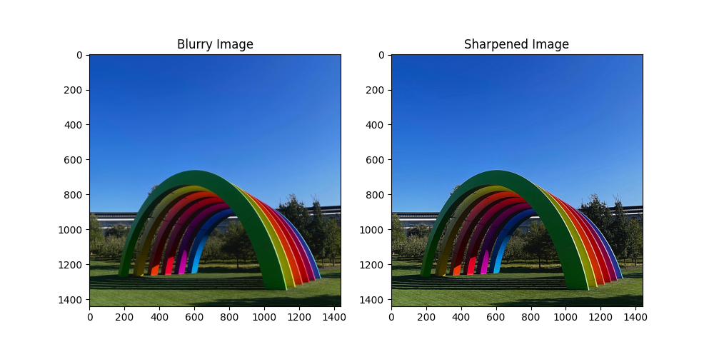
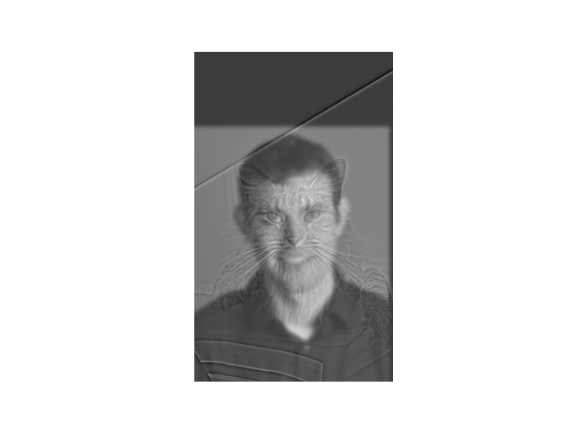
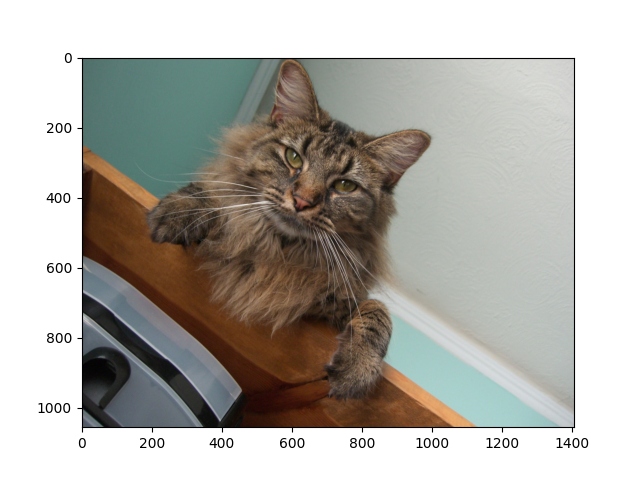
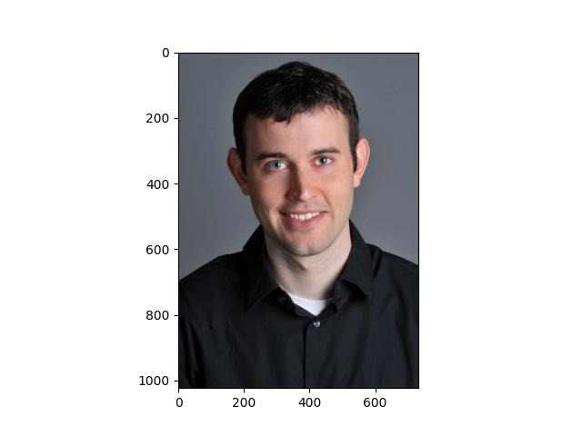
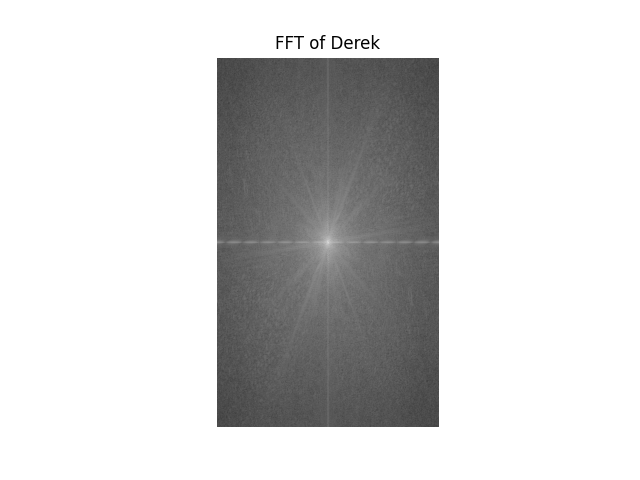
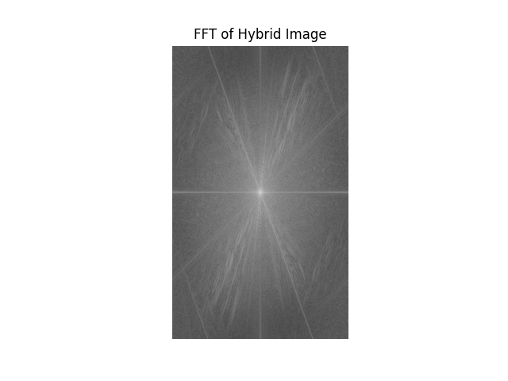

Part 1: Fun with Filters
1.1 Finite Difference Operator
The gradient magnitude represents the strength of edges in an image. TO compute it, convolve the image with finite difference operators D_x and D_y to get the derivatives in the x and y directions. The gradient magnitude is then calculated as magnitude = sqrt(D_x^2 + D_y^2) which highlights areas with strong intesnity changes like edges.
1.2 Derivative of Gaussian (DoG) Filter
Applying the Gaussian filter reduces noise compared to usign only the fiinte difference operators. As it smooths out the noisy regions and prevers the real edges, it produces a cleaner edge detection without extra noise. Therefore, blurring a clear image with gaussian and reverting back results in the same image.
Part 2: Fun with Frequencies
2.1 Image Sharpening
 2.2 Hybrid Images
|  |  |
|  |

|
|  |